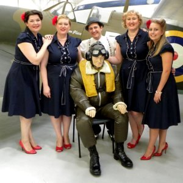

Testimonials
Here are some of the things that people have said about "The Jays Vintage" gigs.
If you have any comments, please do contact us.
If you have any comments, please do contact us.
Louise Hammond (Corporate Events Executive. Royal Air Force Museum, Cosford)"The Jays were absolutely Fantastic! The museum staff and Veterans loved listening to them.""They were professional, entertaining and looked the part!" "We will certainly be inviting them back to perform at the RAF Museum." |
 |
Stacy Birt (Tourism and Town Centre Development Officer, Tamworth)"The Jays played at Tamworth Heritage Open Day event, 14th September 2014 under the historic Town Hall and they certainly gathered a crowd!""Their performance was superb. They looked fabulous and people were dancing in the street." "I would recommend them to anyone looking for a 1940's group. Their repertoire was delightful and they truly added to our occasion." "I would not hesitate to have them back again." |
 |
Iris Adams (At National Memorial Arboretum 2017)"This was a fabulous day out can't wait for next one.""Just loved the singing and vintage dresses." |
 |
Julia Jackson (At National Memorial Arboretum 2017)"You were all fantastic amazing singers you made the day very special and the atmosphere amazing. x" |
|
MrsCupAndSaucer (Wedding Fair, Sutton Coldfield)"Fully Recommend ... Fantastic Harmonies!" |
 |
Margaret Greenwood (Norton Juxta Twycross Fete)"On behalf of Norton Village Hall Committee I would like to thank you for the lovely singing performance you did at Norton Village Fete on Saturday.""You certainly made it all go with a swing and I heard lots of lovely comments about the singing." |
 |
Press Release (Tamworth Council)"The Jays Vintage and Andy B Goode have become popular with the residents of Tamworth and always put on a toe tapping performance." |
Contact Us
- Phone: 07415 338859
- email: Hi@TheJaysVintage.com
- Facebook: TheJaysVintage
- YouTube: The Jays Vintage
- Twitter: @TheJaysVintage
- Andy B Goode: Andy B Goode
- Version: v2.0.4
 |
 |